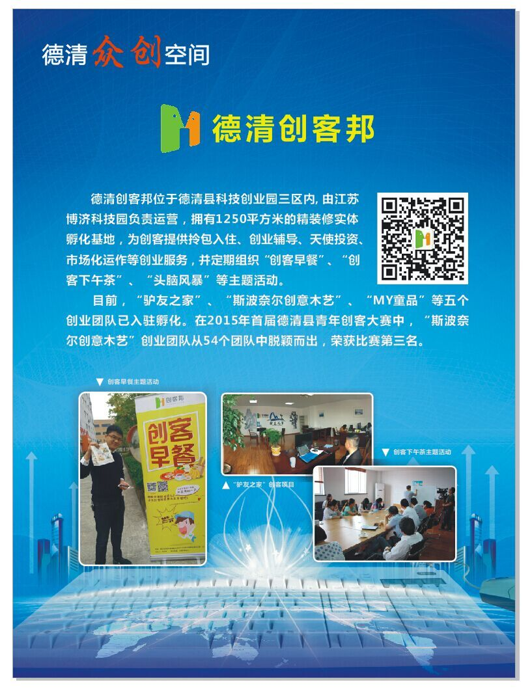
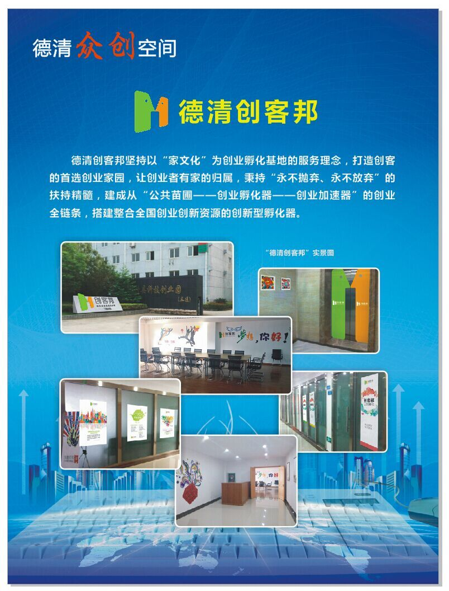

创客邦品牌诞生于2012年，孵化场地面积超过20000平方米，主要是建立创业服务和资源整合平台。我们的目标是致力于打造以“O2O创业孵化+创业投资+创业教育”的创业孵化融合发展新模式，建成从“公共苗圃-创业孵化-加速器”的创业全链条，形成整合全国创业创新资源一体化发展的创新型孵化器，以“家文化”为经营理念，致力于成为创客的首选创业家园，关注创业团队的创业发展，以成长为中心，以发展为动力，以资金为基本面，推动和促进创业孵化和创业投资，营造自循环的创业孵化生态圈创客邦，首批认定的国家级科技企业孵化器，结合自身的产业优势、地理优势、企业家圈层优势，来为创业者服务。  